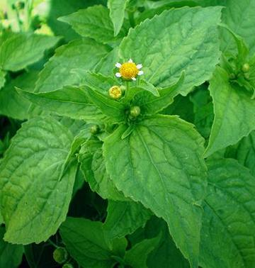
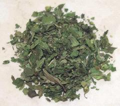

Guasca

[Gallant Soldier (from Galinsoga), Quickweed, Potato Weed (UK, USA);
Guasca (Colombia); Mielcilla (Costa Rica); Piojito (Oaxaca, Mexico);
Galinsoga (New Zealand); Mwamuna aligone (Malawi):
Galinsoga parviflora]
Native to South America, this multi-branched annual herb grows to about 30
inches tall. It first escaped from Kew Gardens in England, infesting the
British Isles, and has since spread to North America, Australasia, Africa,
and other regions, but Antarctica is still Guasca free.
This plant is best known for being a flavoring in the Ajiáco
Soup of Colombia. It can be used in fresh salads, but it's flavor is
more pronounced after cooking. In East Africa, where leaves, stems,
and flowers are eaten, it is gathered in the wild. It is also used dried
and ground in soups.
More on Daisy Herbs & Flowers

Buying and Storing:
In North America, this herb is available
on-line in dried form. I purchased a 3 pack of 10 gram poly bags for 2022
US $12.89, or $12.28 / ounce. In a sealed package, it should be good for at
least 6 months. Shown to the left is 1/2 Tablespoon of Kiska brand
Guascas. 10 grams is about 6 Tablespoons.
Substitute:
No exact, but a combination of 1/4 dried mint and
3/4 dried Marjoram or dried Oregano will get you fairly close.
dy_guascaz 220520 - www.clovegarden.com
©Andrew Grygus - agryg@clovegarden.com - Photos
on this page not otherwise credited © cg1
- Linking to and non-commercial use of this page permitted